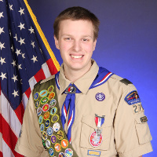
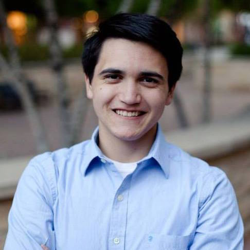
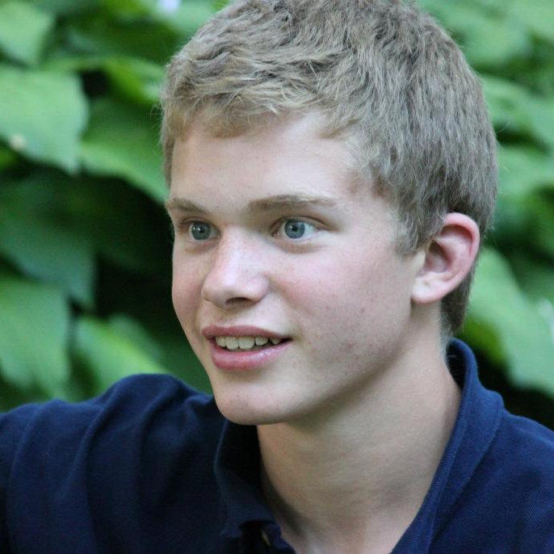
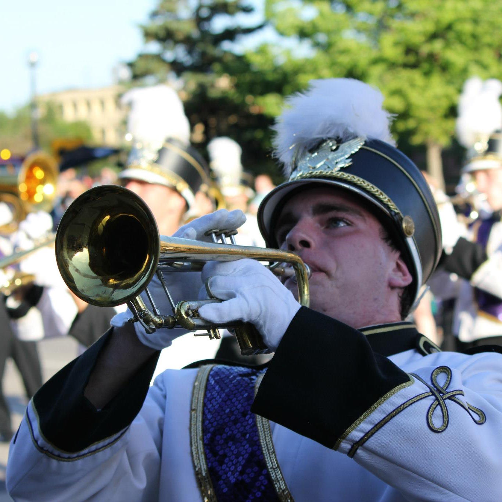
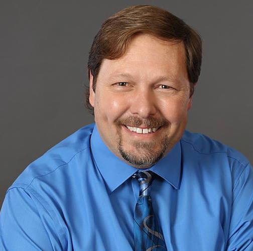
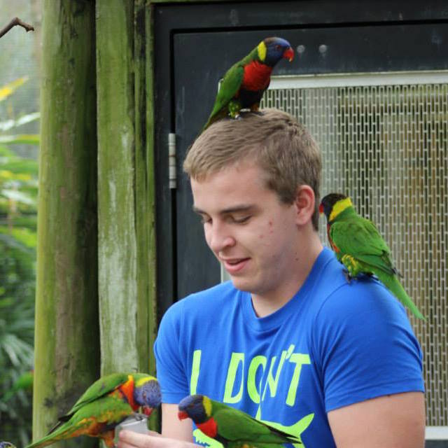
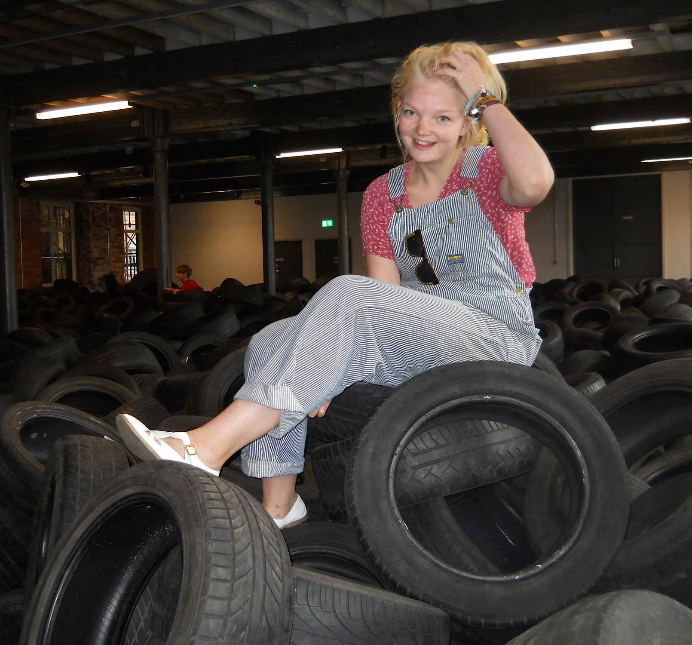

Youth Leaders
- 
Martin McNichols, SPLMartin McNichols has been involved in scouts since the 2nd grade. He has been to numerous scouting functions including National Youth Leadership Training. Martin has also been to the 22nd World Scout Jamboree in Sweden, Philmont Scout Ranch, the Bahamas Sea Base, and Many Point. Martin is a dedicated scout, has achieved Eagle Scout, and will help any scout that asks for or shows a need for help.
Leif Olson, ASPL- 
Bennett Abide, QMInvolved in scouts for many years, Bennett has had many experiences. He has staffed National Youth Leadership Training and been to Philmont Scout Ranch. Bennett enjoys Ultimate Frisbee and wants to become a geneticist. Bennett is very dedicated to scouts and has achieved scouting's higest rank. - 
John Huntly, Scribe
Adult Leaders
- 
Chris Huhn, SM - 
David McNichols, ASM - 
Liam Fury, Chair - 
Georgia Denham, Treasurer